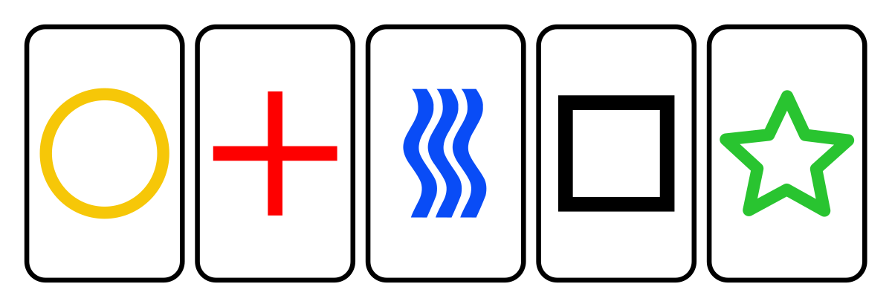

ESP Background

In this tutorial we’ll investigate whether or not there is evidence that signals can be sent by thought to assist in the identification of a specific card of interest from a set of five cards.
In the 1930’s, J.B. Rhine and his wife defined the term extrasensory perception (ESP) to refer to the ability to sense phenomena independently of the physical senses. It encompasses clairvoyance, telepathy, precognition, etc. A set of test cards called Zener cards were developed to test for ESP phenomenon.
In 1995 the American Institutes for Research (AIR) appointed a panel consisting of the statistician Jessica Utts and the psychologist Ray Hyman to evaluate a project investigating remote viewing for espionage applications. The Stargate Project, which was funded by the Central Intelligence Agency and the Defense Intelligence Agency was carried out by the Stanford Research Institute and subsequently by Science Applications International Corporation (SAIC). A report by Utts claimed the results indicated evidence of psychic phenomena.
Activity

Today, we’ll conduct an experiment similar to Rhine’s using Zener cards.
Find someone to help you out (chat with a classmate, sibling, parent, etc. If you can’t find someone to help, you can go to this website to do the experiment). If you’re feeling crafty you can create the five cards above, or you can just use a deck of playing cards (A, 2, 3, 4, 5). You will be the guesser and your helper will be the transmitter (you can always switch after one round of the experiment). Then do the following:
Transmitter shuffles the five cards and selects one without the guesser seeing.
With a blank face, betraying NO emotion (and maybe even removing glasses if the card is reflecting) the transmitter thinks about the card as hard as possible.
The guesser will attempt to receive the signal and choose the correct symbol/card. Record the result as correct or incorrect.
Repeat 50 times and keep track of the number of correct guesses.
Once you’ve completed your trials, answer the questions below.
Use your answer above to write out the null and alternative hypotheses.
What proportion correct did you observe? This is your test statistic.
Do you think your observed test statistic is likely to be due to chance? Why or why not?
Would a test statistic of \(0.25\) be likely to be due to chance? What about \(0.5\)? \(0.75\)? \(1\)?
Evaluate your evidence in R
We would like to determine how strange our observed test statistic is when we assume the null hypothesis is true by finding a \(p\)-value. Let’s go to R and perform a similar procedure to the dolphin card shuffling to see what proportions we expect assuming the null hypothesis. Here we have just a single proportion rather than a difference between two proportions. Examine the code carefully to make sure you can follow it.
## First, this code creates a data set of your sample.
## Replace the 13 and 37 with your match and no match values
myresults <- c(rep("correct", 13), rep("incorrect", 37))
## This code puts it in a format that works with the infer functions
myesp <- data.frame(myresults = myresults)
## Simulating the Null distribution
## Notice that we specify which outcome we are interested in as 'success'
null_distn <- myesp %>%
specify(response = myresults, success = "correct") %>%
hypothesize(null = "point", p = .20) %>%
generate(reps = 1000, type = "simulate") %>%
calculate(stat = "prop")
obs.prop = 13 / 50 # replace this with your own results
## Showing the p-value, only in the right (upper) tail
null_distn %>%
visualize(method = "simulation") +
shade_p_value(obs.prop, direction = "right")
## Getting the actual p-value
null_distn %>%
get_p_value(obs_stat = obs.prop, direction = "right")Based on the histogram above and your data, answer the questions below.
Describe the histogram above. What does it represent? Why is it important in the context of hypothesis testing?
Is there statistically significant evidence that you are better than chance at guessing cards? Calculate a \(p\)-value.
Interpret your \(p\)-value in the context of the problem. What does it mean specifically?
Let’s consider another aspect of this problem. How would the histogram of proportion correct assuming the null hypothesis change if instead of 50 trials we had 10 trials? What about 100 trials? Recreate the histogram by altering the code above and then answer the questions below.
You can copy and past the code from above into the box below. You will just need to change the number of correct and incorrect guess to total 10 and 100 (you can make up the data for these to be similar to what you observed):
myresults <- c(rep("correct", ___), rep("incorrect", ___))
myesp <- data.frame(myresults = myresults)Make sure to copy all of the code from the previous section. And don’t forget to change obs.prop to match your new made-up data with 10 and then 100 trials.
Describe the differences between the histograms based on 10, 50 and 100 trials. Are the differences surprising?
Suppose our observed proportion correct is \(0.3\). How does the \(p\)-value change if we perform 10, 50 and 100 trials? Is this surprising?
Suppose you perform this test with \(7000\) trials. What do you expect do happen?
Please open this link in a new tab and add your experiment results to the spreadsheet (the existing data is from the Spring when we only did ~20 trials each).
Finally, answer the questions below considering all of our class data.
Note from the spreadsheet, my classes have performed this hypothesis test multiple times. Based on the tests performed, how might an unethical researcher provide evidence of ESP?
Can you consider a possible solution to the problem of p-hacking with our data?